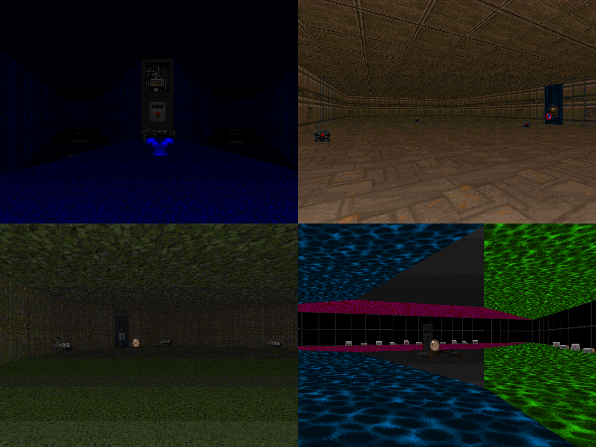

DOWNLOAD LINKS


| Year | 2023 |
| IWAD | Doom II |
| Source port | Boom/UMAPINFO-compatible |
| Game mode(s) | Single-player |
| Map(s) contributed | E1 MAP40, E2 MAP40, E3 MAP39, E4 MAP28 |
10 Line Genocide is a set of megawads consisting of maps made with 10 lines or less. Hosted by NiGHTS108,
the project was announced in January of 2023 and exploded quickly to the point where a grand total of 230 maps were
submitted. And I made 4 of them.
There's a map by Yours Truly in almost all episodes, minus Episode 5. In order of appearance, the maps are called
"Violent Viagra", "The Mandatory STARTAN Box", "Plutonic Torture Hexagon" and "Don't Eat the Triangle-Shaped Bagel".
'Nuff said.